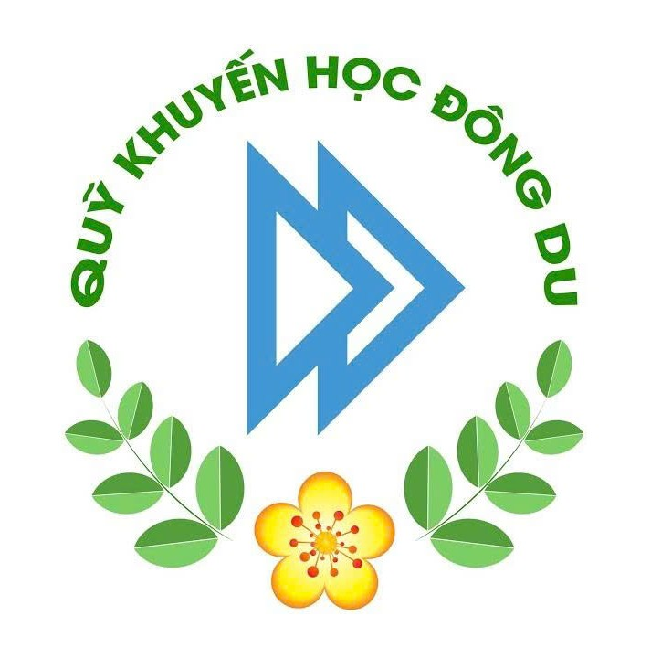

Câu chuyện
Những hành trình học tập được nâng đỡ bởi cộng đồng
Không gian kể lại những bước tiến bình dị, bền bỉ của các thành viên Vươn Lên.

QUỸ KHUYẾN HỌC ĐỒNG DU
Một không gian lưu giữ câu chuyện học bổng, kết nối thành viên và lan tỏa tinh thần vươn lên.
Khám phá cộng đồng thành viên trên khắp Việt Nam.
Hoàng Sa · Trường Sa